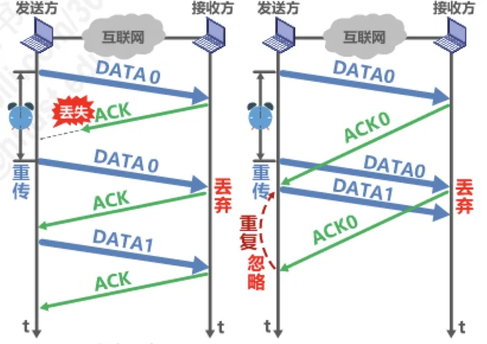
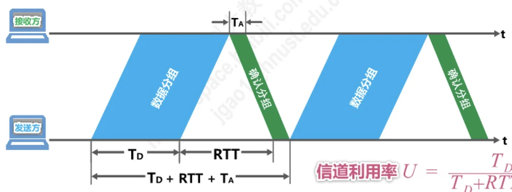
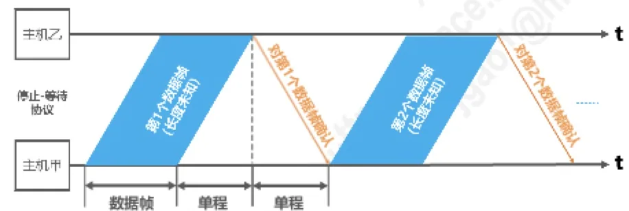

计算机通信与网络 · 第 3 章 数据链路层
3.4.2 可靠传输的实现机制- —— -停止-等待协议
从这一节开始，我们动手实现可靠传输。最简单的机制是停止-等待协议 SW：发送方发一个数据分组就停下来等对方的确认，收到确认再发下一个。它只用 1 个比特编号就能解决分组重复问题，但要靠超时重传来兜底；代价是信道利用率很低。本节把它的基本过程、几种异常情形、注意事项和信道利用率一次讲透。
1. 三种机制与停止-等待协议的基本过程
数据链路层实现可靠传输有三种机制：停止-等待协议 SW（Stop-and-Wait）、回退 N 帧协议 GBN、选择重传协议 SR。需要强调的是，这三种机制的基本原理并不仅限于数据链路层，也可以应用到计算机网络体系结构的各层协议中，学习时不要把思维局限在数据链路层。
停止-等待协议的思路非常朴素：发送方发送一个数据分组后，就停止发送、等待对方的确认；接收方收到数据分组后回送一个确认分组 ACK；发送方收到确认后才发送下一个数据分组。除了确认（ACK），接收方在检测出数据分组有误码时还可以回送一个否认分组 NAK，这两种回应合称「确认与否认」。

2. 超时重传
协议要能应付「什么回应都没有」的情况：如果数据分组在传输中丢失，接收方根本收不到数据，自然就不会发送 ACK 或 NAK；如果不采取其他措施，发送方就会一直处于等待 ACK 或 NAK 的状态，整个通信停摆。
解决办法是超时重传：发送方在发送完一个数据分组时，启动一个超时计时器；若到了计时器所设置的重传时间，发送方仍收不到接收方的任何 ACK 或 NAK，就重传原来的数据分组。重传时间一般选为略大于「从发送方到接收方的平均往返时间」。
3. 分组编号与确认编号
超时重传带来了新的问题：重传的分组到达接收方时，接收方必须能判断出「这是一个重复的分组」而不是新数据。为避免分组重复这种传输错误，必须给每个分组带上序号。对于停止-等待协议，由于每发送一个数据分组就停止等待，只要保证每发送一个新的数据分组，其序号与上次发送的数据分组的序号不同就可以了，因此用一个比特来编号就够了，即编号 0 和 1。
确认分组要不要编号？有两种典型情形可以说明：
- 确认丢失：发送方发出 DATA0，接收方收到后回送 ACK0，但 ACK0 在传输中丢失。发送方超时后重传 DATA0；接收方再次收到 DATA0，凭序号判断出它是重复分组，于是丢弃它并重发 ACK0，发送方就能继续往下发送 DATA1；
- 确认迟到：发送方超时重传 DATA0 之后，原先迟到的 ACK0 才到达。发送方需要判断这个 ACK 是不是重复的——这就说明理论上ACK 分组也需要编号，所用比特数量与数据分组编号相同。
不过，数据链路层一般不会出现 ACK 分组迟到的情况，因此在数据链路层实现停止-等待协议可以不用给 ACK 分组编号。
4. 注意事项
把上面的讨论收拢成四条要注意的地方：
- 接收端检测到数据分组有误码时，将其丢弃并等待发送方超时重传。但对于误码率较高的点对点链路，为使发送方尽早重传，也可以给发送方发送 NAK 分组；
- 为了让接收方能够判断所收到的数据分组是否重复，需要给数据分组编号。由于停止-等待协议的停等特性，只需 1 个比特编号就够了，即编号 0 和 1；
- 为了让发送方能够判断所收到的 ACK 分组是否重复，需要给 ACK 分组编号，所用比特数量与数据分组编号所用比特数量一样；数据链路层一般不会出现 ACK 分组迟到的情况，因此可以不用给 ACK 分组编号；
- 超时计时器设置的重传时间应仔细选择，一般可将重传时间选为略大于「从发送方到接收方的平均往返时间」。在数据链路层，点对点的往返时间比较确定，重传时间比较好设定；然而在运输层，由于端到端往返时间非常不确定，设置合适的重传时间有时并不容易。
5. 停止-等待协议的信道利用率
停止-等待协议最要命的缺点是信道利用率低。设数据分组的发送时延为 T_D、确认分组的发送时延为 T_A、往返时延为 RTT，则发送方从开始发送一个数据分组到收到确认、可以开始发送下一个分组为止，一共要花 T_D + RTT + T_A 的时间，其中真正用来传送数据分组的只有 T_D，所以
信道利用率 U = T_D / (T_D + RTT + T_A)
看一组具体的数字。假设信道长度 2000 km、数据分组长度 1500 B、发送速率 10 Mbit/s（可忽略 T_A，因为 T_A 一般都远小于 T_D）：
- T_D = 1500 × 8 bit ÷ 10 × 10⁶ bit/s = 1.2 ms；
- RTT = 2 × 2000 km ÷ 2 × 10⁸ m/s = 20 ms（设信号在信道上的传播速率为 2 × 10⁸ m/s）；
- U = 1.2 ms ÷ (1.2 ms + 20 ms) ≈ 5.66%。
若把发送速率提高到 100 Mbit/s，则 T_D 缩短为 0.12 ms，而 RTT 仍是 20 ms，于是 U = 0.12 ÷ (0.12 + 20) ≈ 0.6%——速度提高了 10 倍，信道利用率反而更低。

结论很清楚：当往返时延 RTT 远大于数据帧发送时延 T_D 时（例如使用卫星链路），信道利用率非常低；若出现重传，则对于传送有用的数据信息来说，信道利用率还要降低。为了克服这个缺点，就产生了另外两种协议——回退 N 帧协议 GBN 和选择重传协议 SR（分别见 3.4.3、3.4.4 节）。停止-等待协议又被称为自动请求重传 ARQ（Automatic Repeat reQuest）。
6. 例题解析
2018 年题 36：主机甲采用停-等协议向主机乙发送数据，数据传输速率为 3 kbps，单向传播时延是 200 ms，忽略确认帧的传输时延。当信道利用率等于 40% 时，数据帧的长度为多少？（A. 240 比特 B. 400 比特 C. 480 比特 D. 800 比特）
解析：信道利用率 = 数据帧发送时延 ÷（数据帧发送时延 + 端到端往返时延）。设数据帧长度为 x 比特，数据帧发送时延 = x ÷ 3000（秒），端到端往返时延 = 2 × 200 ms = 400 ms。于是
40% = (x / 3000) ÷ (x / 3000 + 0.4)，解得 x = 800 比特。答案：D。

本节小结
- 数据链路层实现可靠传输的三种机制是停止-等待协议 SW、回退 N 帧协议 GBN、选择重传协议 SR，其原理也可用于其他各层；
- 停止-等待协议：发一个数据分组就停下等确认，接收方用 ACK 确认、用 NAK 否认；接收方收不到数据就不回应，发送方靠超时重传补救，重传时间取略大于平均往返时间；
- 为避免分组重复，必须给数据分组编号，停等特性使 1 个比特（0 和 1）就够了；理论上 ACK 也要编号，但数据链路层不会出现 ACK 迟到，故可以不给 ACK 编号；
- 接收方检测到误码时通常丢弃并等待超时重传，误码率高的点对点链路也可以回送 NAK 让发送方尽早重传；
- 信道利用率 U = T_D / (T_D + RTT + T_A)；当 RTT 远大于 T_D 时利用率极低（2000 km、10 Mbit/s 的例子只有 5.66%，提速到 100 Mbit/s 反而降到 0.6%），这正是 GBN 与 SR 出现的理由。